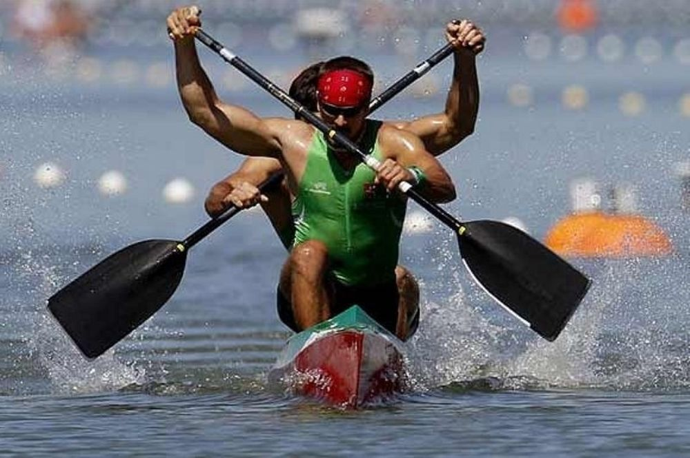
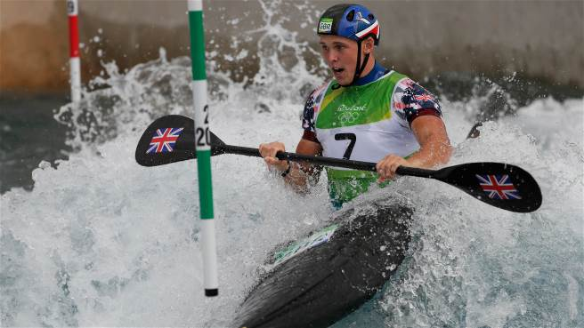
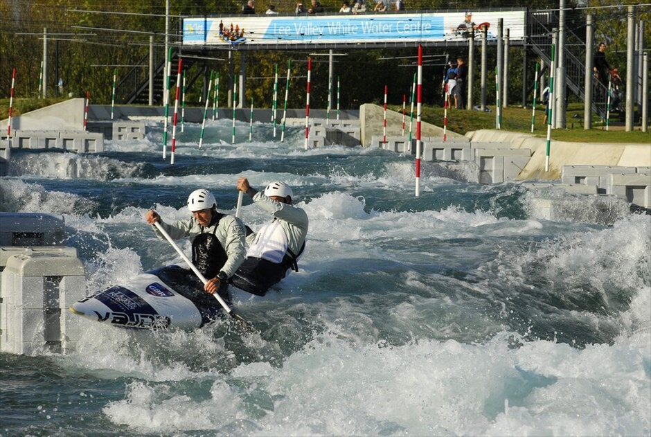
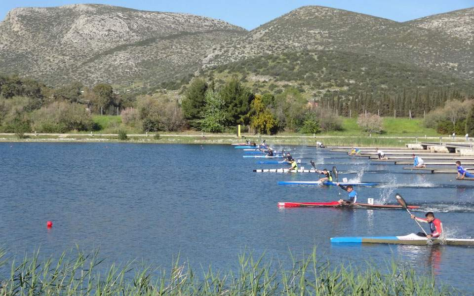

Κανό-Καγιάκ
To άθλημα του κανόε καγιάκ (canoe kayak) είναι άρρηκτα συνδεδεμένο με τους όρους επιβίωσης των Ινδιάνων και των Εσκιμώων. Κατασκευασμένο από δέρμα και λεπτά ξύλα ή οστά θαλάσσιων θηλαστικών χρησίμευε στις μετακινήσεις και στην αναζήτηση τροφής. Με την πάροδο των χρόνων, το κανόε καγιάκ εξελίχτηκε σ’ ένα συναρπαστικό σπορ αναψυχής, ενώ από το 1992 επανεμφανίζεται στην Ολυμπιάδα της Βαρκελώνης στον τεχνητό στίβο του La seu d' Urgell και από τότε καθιερώνεται ως Ολυμπιακό άθλημα. Το κανόε καγιάκ ξεκίνησε την παρουσία του ως Ολυμπιακό άθλημα στους αγώνες του 1924 με σπριντ. Ωστόσο, επίσημο Ολυμπιακό άθλημα έγινε από τους αγώνες του 1936. Είναι ένα άθλημα ιδιαίτερα αγαπητό στην Ευρώπη και ιδιαίτερα στη Γερμανία, τη Σουηδία και τη Ρωσία. Στην Ελλάδα η ιστορία του κανόε καγιάκ ξεκινά το 1987 με υπουργική απόφαση που αναθέτει την ανάπτυξη και την εποπτεία του αθλήματος στην Ελληνική Κωπηλατική Ομοσπονδίαμε τη δημιουργία ειδικής επιτροπής κανόε καγιάκ. Το 1990 και το 1991 διοργανώνονται στα Ιωάννινα το Βαλκανικό Πρωτάθλημα, οι Μεσογειακοί Αγώνες και το 1ο Πανελλήνιο Πρωτάθλημα κανόε καγιάκ Flatwater. Ταυτόχρονα συγκροτείται η Εθνική Ομάδα Flatwater και ξεκινά με δειλά βήματα η ελληνική παρουσία σε μεγάλες διεθνείς διοργανώσεις.
| Ονομασία | Περιγραφή | Εικόνα |
| Κανόε (σύμβολο: C): | ο αθλητής κωπηλατεί γονατιστός με μονό κουπί στη μια μεριά της λέμβου. |  |
| Κανόε Σλάλομ(σύμβολο: C): | ο αθλητής κωπηλατεί με διπλό κουπί. |  |
| Καγιάκ Σλάλομ (σύμβολο: K): | ο αθλητής κωπηλατεί καθιστός με μονό κουπί. |  |
| Καγιάκ (σύμβολο: K): | ο αθλητής κωπηλατεί καθιστός με διπλό κουπί. |  |